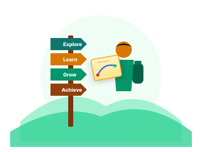

alt_route Career Roadmap Generator
Plan your future step by step. Choose your current education and see the best career path for you.
మీ విద్యను ఎంచుకోండి మరియు మీ కెరీర్ మార్గాన్ని తెలుసుకోండి.

Tell us two things
రెండు విషయాలు చెప్పండి
lightbulb
Before you start — the honest picture
Other routes to similar work
ఇలాంటి పనికి ఇతర మార్గాలు
These are shorter or easier to reach than the main path above, and they lead to real work in the same field. Many students end up choosing one of these — that is a good outcome, not a lesser one.